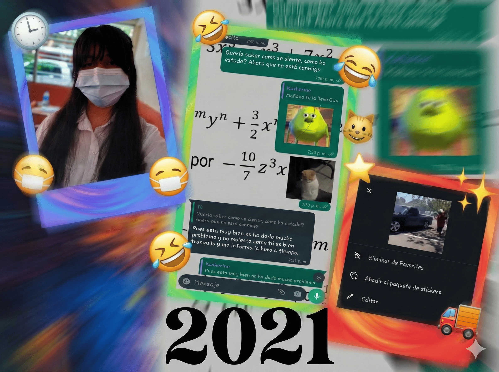

Recuerdos 2021
Esta es la unica foto que tengo del 2021 y pues aunque no hablabamos mucho recuerdo que te llevaste mi reloj y no me lo querias devolver jsjsk, tambien fue la vez que te envié aquel sticker que hizo historia en nuestra amistad y pues el resto del 2021, lo de siempre molestar y molestar jajajaj Ahora bien queda en un dilema quien le hablo a quien la primera vez pero no cabe duda que fue lo mejor que me pudo pasar, conocer a esa personita tan divertida y olvidadiza jajaj. ¡Lo mejor de lo mejor del 2021!